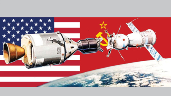

The Race to the Moon
For thousands of years, the Moon was a distant mystery hanging in the night sky. Ancient civilizations used it to track time, sailors used it for navigation, and countless myths and legends were built around it. Yet no human imagined that one day people would actually stand on its surface.
Everything changed during the twentieth century. What began as a political rivalry between two superpowers eventually became one of the greatest scientific and engineering achievements in history. The race to the Moon was not only a contest between nations— it became a moment that changed humanity's relationship with space forever.
The world after World War II
After World War II ended in 1945, the United States and the Soviet Union emerged as the two most powerful nations on Earth. Although they had been allies during the war, their political systems were very different and tensions quickly grew.
This rivalry became known as the Cold War. Unlike traditional wars, it was fought through technology, economics, military strength, intelligence operations, and global influence. Each side wanted to prove that its system was superior.
Rockets open a new frontier
During World War II, engineers had developed powerful rockets capable of traveling incredible distances. After the war, both superpowers invested heavily in improving rocket technology.
Scientists soon realized that rockets could do far more than carry weapons. They could launch satellites, scientific instruments, and eventually people into space. A completely new frontier had opened.
Sputnik shocks the world
On October 4, 1957, the Soviet Union launched Sputnik 1, the first artificial satellite ever placed into orbit around Earth.
Sputnik was small and simple, but its impact was enormous. People around the world listened to its radio signal as it passed overhead. For the first time, humanity had successfully placed an artificial object into space.
In the United States, many people were stunned. If the Soviet Union could launch a satellite, it might also possess advanced missile technology. The event sparked intense competition and accelerated investment in science and engineering.
The Soviet Union takes an early lead
Sputnik was only the beginning. The Soviet space program continued achieving major milestones that captured global attention.
In 1957, Laika became the first animal to orbit Earth. Then, on April 12, 1961, Soviet cosmonaut Yuri Gagarin became the first human in space.
Gagarin completed one orbit around Earth and returned safely home, instantly becoming an international hero. Many people believed the Soviet Union would continue dominating the Space Race and would likely be the first nation to reach the Moon.
Kennedy's bold challenge
The United States needed a goal ambitious enough to regain momentum. President John F. Kennedy proposed something extraordinary: landing a human on the Moon and returning them safely to Earth before the decade ended.
At the time, this goal seemed almost impossible. America had only recently sent its first astronaut into space, and many of the technologies required for a lunar mission did not yet exist.
Building the Apollo program
NASA responded by creating the Apollo program, one of the most ambitious engineering projects ever attempted. Hundreds of thousands of people contributed to the effort, including engineers, mathematicians, scientists, technicians, and astronauts.
New spacecraft had to be designed. Guidance computers had to be developed. Life-support systems, navigation systems, communication technology, and powerful rockets all had to be built and tested.
The challenge was so large that it required cooperation between universities, government agencies, private companies, and research laboratories across the United States.

The tragedy of Apollo 1
The road to the Moon was not without sacrifice. In 1967, astronauts Gus Grissom, Ed White, and Roger Chaffee were killed during a ground test when a fire broke out inside the Apollo 1 spacecraft.
The tragedy shocked NASA and forced engineers to redesign important systems. Although devastating, the lessons learned from Apollo 1 helped improve safety for future missions.
The mighty Saturn V
To reach the Moon, NASA needed a rocket unlike anything the world had ever seen. The result was the Saturn V, a giant machine standing over 110 meters tall.
When launched, the Saturn V generated millions of pounds of thrust, enough to lift thousands of tons away from Earth's gravity. It remains one of the most powerful rockets ever successfully flown.
Without the Saturn V, the dream of reaching the Moon would have remained impossible.
Landing on the Moon demonstrated what humanity could achieve through science, engineering, and determination. Millions of people around the world watched the event live on television, making it one of the most viewed moments in human history.
The achievement inspired countless young people to pursue careers in science, technology, engineering, and mathematics. It also proved that goals once considered impossible could become reality through cooperation, innovation, and persistence.
Technology born from the Space Race
The Space Race accelerated technological development at an incredible pace. Engineers had to invent new materials, computers, communication systems, and navigation technologies to make lunar missions possible.
Early spacecraft computers were extremely limited by modern standards, yet they successfully guided astronauts hundreds of thousands of kilometers through space. The challenges of space exploration pushed computing technology forward and helped lay foundations for future innovations.
Advances made during the Space Race influenced weather satellites, telecommunications, medical equipment, improved manufacturing techniques, and many technologies used in everyday life today.
The end of the race
Although the United States achieved the first Moon landing, space exploration did not stop. Additional Apollo missions continued exploring the lunar surface, collecting rock samples and conducting scientific experiments.
Over time, the intense competition between the United States and the Soviet Union gradually shifted toward greater cooperation. In 1975, the Apollo-Soyuz Test Project became a symbol of improving relations between the two nations.
What began as a political rivalry eventually helped create an international scientific community focused on exploring space together.
The legacy today
More than fifty years after Apollo 11, the Moon landing remains one of humanity's greatest achievements. It demonstrated the power of ambition, scientific thinking, and long-term investment in knowledge.
Modern space agencies and private companies continue building on the foundations established during the Space Race. New missions aim to return humans to the Moon, establish permanent lunar bases, and eventually send astronauts to Mars.
The lessons learned during the journey to the Moon continue to influence exploration, engineering, and scientific discovery around the world.
Looking toward the future
Today, humanity stands at the beginning of a new era of space exploration. Missions are being planned to explore the Moon in greater detail, search for resources, and prepare for future journeys deeper into the Solar System.
Just as the Space Race inspired a generation in the twentieth century, future missions may inspire the next generation of scientists, engineers, astronauts, and explorers.
The story of the Race to the Moon reminds us that curiosity is one of humanity's strongest forces. When people dare to dream big and work together, even worlds hundreds of thousands of kilometers away can become reachable destinations.